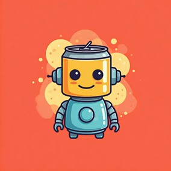
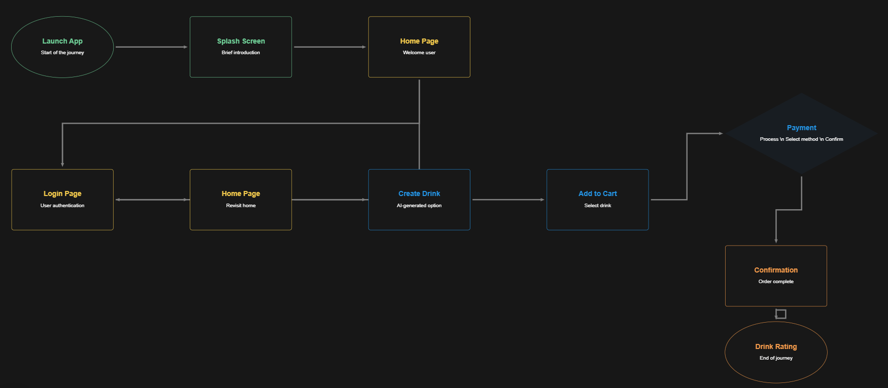

Overview of the Software
What is CodePop?
CodePop is an AI-powered, robotic soda dispensing platform that reimagines how customers create, order, and enjoy custom drinks. Using a mobile app, customers design their perfect drink by selecting a base soda, adding syrups and mix-ins, and letting AI suggest creative combinations. Orders are placed through secure Stripe payments and fulfilled by robotic dispensers at physical CodePop store locations. Drinks are made fresh just before pickup, ensuring maximum quality.
Behind the scenes, staff members across five distinct roles use web-based dashboards to manage inventory, coordinate supply chains, schedule machine repairs, track revenue, and maintain system health across a nationwide network of stores and regional supply hubs.
Who is this Manual For?
| Role | Description |
|---|---|
| Customer | End users who create and order custom drinks via the mobile app |
| Manager | Store managers who oversee inventory, revenue, and daily operations |
| Admin | Store administrators who manage user accounts, roles, and permissions |
| Super Admin | System-wide administrators with global access across all stores and regions |
| Logistics Manager | Regional coordinators who manage supply delivery and inventory distribution |
| Repair Staff | Technicians who schedule and log machine maintenance and repairs |
How the System Works

The Customer Journey: Customers open the mobile app, browse pre-made or seasonal drinks, or build their own custom creation. The AI engine suggests ingredient combinations based on preferences or order history. After adding items to the cart, customers proceed to checkout and pay securely via Stripe. Once payment is confirmed, the app tracks the customer's location (with permission) and notifies the robot at precisely the right moment—the "Golden Window"—to begin drink preparation. When the customer arrives at the store, they enter a locker code to retrieve their fresh drink.
Behind the Scenes: Staff members log into their role-specific dashboards to manage their responsibilities: Managers track store inventory and revenue, Logistics Managers coordinate regional supply delivery, Repair Staff schedule machine maintenance, and Super Admins oversee the entire system across seven regions and dozens of stores.
Getting Started
👤 I'm a Customer
Quick Start:
- Download the CodePop app from the App Store, Google Play, or visit the web version
- Create an account (optional—you can order as a guest)
- Browse drinks or use AI to generate a suggestion
- Add your drink to the cart and proceed to checkout
- Pay via Stripe with your credit or debit card
- Allow location access or tap "Start" when you leave for the store
- Arrive at the store and enter the locker code to pick up your drink
👔 I'm a Staff Member
Quick Start:
- Receive login credentials from your Admin
- Open
http://localhost:5173in your browser - Log in with your email and password
- You'll be automatically redirected to your role's dashboard
- Start managing your responsibilities
Test Accounts (For Development)
These accounts are pre-seeded in the system during development and testing:
| Role | Username | Password | Dashboard URL |
|---|---|---|---|
| Super Admin | superadmin | superadmin123 | http://localhost:5173/super-admin |
| Admin | admin | admin123 | http://localhost:5173/admin |
| Manager | manager | manager123 | http://localhost:5173/manager |
| Logistics Manager | logistics | logistics123 | http://localhost:5173/logistics |
| Repair Staff | repairstaff | repair123 | http://localhost:5173/repair |
Installation Instructions
This section contains setup instructions for installing CodePop on your local machine. If you're a customer or staff member using the already-deployed system, skip to the Getting Started section.
Prerequisites
- Git
- Node.js 18+ (for frontend apps)
- Docker & Docker Compose (for backend)
- A Stripe account (for payment keys)
- A Mapbox account (for location services)
Clone the Repository
git clone <repo-url>
cd codepopConfigure Environment Variables
cp codepop_backend/.env.example codepop_backend/.envEdit the .env file and fill in the following keys:
| Environment Variable | Description | Where to Get It |
|---|---|---|
STRIPE_SECRET_KEY |
Stripe API secret key (starts with sk_) |
Stripe Dashboard → API Keys |
STRIPE_PUBLISHABLE_KEY |
Stripe publishable key (starts with pk_) |
Stripe Dashboard → API Keys |
MAPBOX_ACCESS_TOKEN |
Mapbox API token for maps and location | Mapbox Account → Tokens |
SECRET_KEY |
Django secret key (any long random string) | Generate yourself (e.g., python -c 'from django.core.management.utils import get_random_secret_key; print(get_random_secret_key())') |
Start the Backend (Django + PostgreSQL)
cd codepop_backend
docker compose uphttp://localhost:8000✓ PostgreSQL database and Redis cache start automatically
✓ Test user accounts are seeded automatically
✓ Celery task queue is ready for async jobs
Start the Mobile App (React Native + Expo)
cd codepop
npm install
npm startThe Expo CLI will prompt you with platform options:
- Press
ifor iOS Simulator - Press
afor Android Emulator - Press
wfor Web Browser
http://localhost:8000.
Start the Staff Dashboards (React + Vite)
cd dashboards_frontend
npm install
npm run devhttp://localhost:5173✓ The app will auto-redirect logged-in staff to their role's dashboard
Verification
To verify everything is working:
- ✓ Backend: Navigate to
http://localhost:8000/api/(should show API root) - ✓ Mobile App: See the Expo terminal for platform launch confirmation
- ✓ Dashboards: Navigate to
http://localhost:5173and log in with test credentials
Customer App Features
The CodePop mobile app is your gateway to creating and ordering custom drinks. Whether you're a registered user or ordering as a guest, the app guides you through the entire experience from drink selection to pickup.
Creating an Account
Open the CodePop app and tap "Sign Up" on the login screen.
Enter your email address and create a password.
Log in with your new credentials and complete the optional first-time tutorial.
Building a Custom Drink
The drink builder is where creativity meets technology. Choose your base, add flavors and mix-ins, and let AI suggest unexpected combinations.
Tap the "Design" tab at the bottom of the screen.
Adjust ice level and size to your preference.
Type into the "Search ingredients" box to search for ingredients.
Select a base soda from the dropdown (Coke, Sprite, Dr Pepper, etc.)
Add syrups (vanilla, coconut, mango, etc.) and add-ins (cream, purees, whipped topping, etc.)
Tap the heart icon to favorite your creation, and give it a custom name in the popup menu.
Tap "Ask Tonic" for an AI-generated combination, or "Add to My Order" to save your creation.
Cart & Checkout
Tap the "Cart" tab to review your items. You can:
- Adjust quantities with the + and − buttons
- Remove items you don't want
- See the running total
To edit a drink in your cart, tap the pencil icon, then tap "Save Changes" once you're done.
If you have a promo code, enter it in the "Promo Code" field and tap "Apply".
Tap "Proceed to Checkout" to proceed to the payment screen.
Review your delivery/pickup location and enter your payment details.
CodePop accepts all major credit and debit cards via Stripe.
Tap "Pay" to confirm your order.
Recurring Orders
Set up recurring orders to have your favorite drinks automatically delivered on a schedule. Before you pay, toggle the "Make this a recurring order" option to get started.
Toggle the switch next to "Make this a recurring order". A popup window will appear.
Repeat Every: Select how frequently this order repeats. (Default is every week)
Repeat On: Select which days of the week this order repeats.
Ends: Select when this recurring order will stop occurring.
Tap "Done" once you've filled out the form to save your recurring order settings.
Order Pickup (The "Golden Window")
After you place your order, CodePop uses advanced timing to start drink preparation at exactly the right moment. This ensures your drink is made fresh and arrives at peak quality.
After payment, you'll see a confirmation screen with your locker code.
The app asks for location permission. Allow it so CodePop can track your arrival.
A live map shows your distance to the store. When you're close, the robot begins preparing your drink.
Arrive at the store and find the CodePop locker. Enter the code shown in your app to unlock your drink.
Enjoy your fresh drink! You'll be prompted to rate it (1–5 stars) after pickup.
Saving Favorites
Save your favorite drinks for one-tap reordering.
- From any drink screen, tap the heart icon to add it to your favorites
- Your saved drinks appear on the home tab
- Tap a favorite to reorder it instantly (if all ingredients are in stock)
- Use the edit or delete buttons to rename or delete a saved drink
Preferences & Account Settings
Customize your CodePop experience in the "Profile" tab.
- Store Location: Set your preferred CodePop location
- Theme: Toggle between light mode, dark mode, or system default
- Notifications: Control alerts for order status, promotions, and new items
- Account Settings: Change your email or password
Seasonal & AI-Recommended Drinks
The "Home" tab showcases CodePop's best offerings:
- Seasonal Carousel: Limited-edition drinks that rotate throughout the year
- Saved Drinks: Easy access to your favorite creations
Getting Help & Support
Need assistance? Tap the "Chat" tab to access our AI-powered customer support bot, Tonic.
- Report an Issue: Tell Tonic about problems with your drink or order
- Track Your Delivery: Get real-time updates on your order
- Request a Refund: Start the refund process for a drink you didn't enjoy
- General Questions: Ask Tonic anything about CodePop
Manager Dashboard
Managers oversee a single CodePop store location. Your dashboard provides visibility into daily operations, inventory levels, revenue performance, and supply needs.
http://localhost:5173/manager and log in with your credentials.
Overview
Get a quick snapshot of your store's health and performance.
- KPI Cards: Daily revenue, orders today, active users, low inventory count
- Alerts Panel: Urgent notices (low stock, pending orders, machine issues)
- Quick Links: Jump directly to inventory, supply requests, or revenue reports
Revenue
Track your store's financial performance over time.
- Revenue Trend Chart: 7-day, 30-day, or custom date range view
- Category Breakdown: See which drink categories generate the most revenue
- Top Items: Identify your best-selling drinks
- Peak Hours/Days: Understand when customers are most active
Inventory
Monitor stock levels and manage your supply chain.
- Three Categories: Syrups, Sodas, and Add-Ins
- Stock Status: Critical (order now), Low (reorder soon), Healthy (in stock)
- Days Remaining: Estimated days until stockout based on usage patterns
- AI Recommendations: Suggested order quantities based on demand forecasting
- Filters & Sort: Organize by status, category, or consumption rate
Order Stats
Understand your customer demand and fulfillment performance.
- Order Volume KPIs: Daily/weekly/monthly order counts
- Fulfillment Time: Average time from order to pickup
- Satisfaction Score: Aggregate rating of customer drinks
- Order History Table: Browse individual orders with timestamps and amounts
Supply Requests
Request inventory from your regional supply hub.
Locate "New Supply Request" panel on the left side of the page.
Select your regional hub and the items you need (syrups, sodas, add-ins)
Enter quantities, set urgency (normal, high, critical), and make any necessary notes.
Click the "Submit Request" button to send the request to your logistics manager.
- View Requests: See all pending, approved, and fulfilled requests with status filters
- Supply Movement History: Track when supplies were delivered and when they were consumed
Admin Dashboard
Admins manage user accounts, roles, and system settings for their store. You have responsibility for user provisioning, access control, and audit trail monitoring.
http://localhost:5173/admin and log in with your credentials.
Dashboard Home
Quick overview of your store's user population.
- Total Users: All accounts ever created
- Active Users: Users who logged in this month
- Disabled Users: Accounts currently deactivated
- Manager Count: Staff members with manager privileges
User Management
Create, edit, and manage user accounts.
Click "Create User" to add a new account. Enter email, first name, and last name.
Assign a role (customer, manager, admin, logistics, repair staff) and click "Create".
The user will receive an email with a password reset link. They can set their own password.
- Search & Filter: Find users by email, name, role, or status
- Edit Users: Change name, email, or role assignment
- Disable/Enable: Temporarily restrict or restore account access
- Delete Users: Soft-delete accounts (data is preserved for audit purposes)
Manager Accounts
Promote staff members to manager status.
- View all users with manager privileges
- Promote a customer or staff account to manager (grants access to Manager Dashboard)
- Revoke manager status
Roles & Permissions
Create custom roles and assign granular permissions.
- View Roles: List all system roles (built-in and custom)
- Create Role: Define a new role with specific permissions
- Edit Role: Modify role name and permission grants
- Permission Categories: User Management, Roles & Permissions, System Audit
Audit Trail
Review all administrative actions taken by admins and managers.
- Paginated Log: Browse historical actions (newest first)
- Filter: Search by user, action type, date range, or outcome (success/failure)
- Action Details: See who did what, when, and the result (what changed)
Super Admin Dashboard
Super Admins have global, system-wide access across all CodePop stores, regions, and supply hubs. You are responsible for the entire platform's health, configuration, and long-term strategy.
http://localhost:5173/super-admin and log in with your credentials.
Note: Only super admin accounts can access this dashboard.
Dashboard Home
System-wide health and performance at a glance.
- Regional Status Grid: Quick health check of all 7 regions (Chicago, NJ, Logan UT, Dallas, Atlanta, Phoenix, Boise)
- System KPIs: Active orders, national revenue today, inventory health, machine uptime, API response time, network latency
- Alerts Panel: Critical issues across the system
- Network Health: Status of database, cache (Redis), task queue (Celery), and external integrations (Stripe, Mapbox, AI services)
- 7-Day Order Volume Chart: Trend across the entire network
Regions & Stores
Manage the physical CodePop store network.
- List All Stores: Browse stores across all 7 regions with operational status
- Create Store: Register a new location (requires region, address, manager assignment)
- Edit Store: Update location details, manager, or regional assignment
- Regional Map View: Visual representation of store locations by region
- 7 Regions: A (Chicago), B (NJ), C (Logan UT), D (Dallas), E (Atlanta), F (Phoenix), G (Seattle)
Supply Hubs
Oversee the 7 regional supply hubs that distribute inventory to stores.
- List Hubs: View all 7 supply hubs with current inventory levels
- Create/Edit Hub: Add a new hub or update hub details (region, manager, address)
- Hub Inventory: Monitor syrup, soda, and add-in stock at each hub
- Supply Requests: Review and approve major requests from hubs or regions
User Management
Manage all users across the entire system.
- Search All Users: Find any user by email, name, role, or region
- Bulk Role Assignment: Assign multiple users to a new role at once
- Bulk Region Assignment: Assign users to a region (for logistics and repair roles)
- Enable/Disable Accounts: Toggle access for any user
- Delete Users: Remove accounts from the system
AI Configuration
Tune the machine learning models that power CodePop's recommendations and automation.
- Recommendation Engine: Adjust parameters for drink suggestions (frequency, similarity threshold, seasonality weight)
- Chatbot (Tonic): Configure response style, escalation rules, and knowledge base
- Forecasting AI: Tune supply demand prediction, inventory optimization, machine uptime forecasting
- Reset to Defaults: Revert any configuration to factory settings
Reports & Analytics
Generate comprehensive reports across the entire network.
- Revenue Report: National revenue by date range, store, region, or category
- Orders Report: Order volume, average order value, fulfillment time statistics
- Inventory Report: Stock levels by region, hub, store, and category
- Machine Uptime Report: Repair frequency, downtime duration, maintenance trends
- Export: Download reports as CSV or PDF for external analysis
Audit Logs
Full system audit trail with advanced filtering.
- All Actions: Every admin action across all regions and stores
- Date Range Filter: Search actions within a specific time period
- User Filter: Find all actions by a specific admin
- Action Type Filter: Search by category (user management, config changes, deletions, etc.)
- Export Logs: Download audit logs for compliance or investigation
Network Tests
This lets you run tests across the whole Codepop™ network, all hubs and stores, and checks to make sure all their systems are working.
These are the following tests you can run and what they do:
- Health Check: Pings every server on the network to check if they're running
- Store Registry: Hubs check to make sure the stores under them can connect
- Heartbeat: Hubs ping the stores under them to check their status
- Cross-Store Login: Checks the if users can login in from different stores
- Cross-Region Login: Checks if users can login in when connecting to a store in a different region
- P2P User Sync: Updates user profiles across a hubs network
- Profile Propagation: Propagates user profiles across the a hubs network
- Revenue Aggregation: Gathers the revenue from every store in the network
- Auth Rejection: Makes sure hubs can't get information directly from stores not under them
You can run all these tests individual by pushing the buttons with the respective names in the Test section or you can run them sequentially by pushing the Run All Tests at the top of the Test section.
After you run a test you'll get a report under the network model in the test results section showing everything that passed or failed.
System Settings
Global configuration and operational toggles.
- Maintenance Mode: Put the system in maintenance to prevent new orders (staff dashboards remain accessible)
- System Overrides: Force-enable features or disable problematic integrations
- Notification Thresholds: Set alerts for latency, inventory depletion, machine downtime
- Backup & Recovery: Configure automated database backups and restore points
Help Docs
Internal documentation and runbooks.
- Links to operational guides for each role
- Incident response procedures
- API documentation for integrations
- Troubleshooting guides for common issues
Logistics Manager Dashboard
Logistics Managers coordinate supply delivery from regional hubs to stores. You're responsible for ensuring stores never run out of ingredients and that deliveries happen efficiently.
http://localhost:5173/logistics and log in with your credentials.
Scope: You can only view and manage your assigned regional hub.
Overview
Dashboard summary of your hub's current state.
- KPI Cards: Stores at critical inventory level, deliveries in transit, pending requests, trending ingredient, forecast accuracy
- Hub Status Section: Current inventory levels and hub health
- Critical Stores List: Top 5 stores with 3 days or less of supply remaining (requires immediate attention)
- Alerts Panel: Urgent notices
Stores
Monitor inventory health at each store in your region.
- Store Health Grid: Filter by status (Critical, Low, Good)
- Store Detail View: Click any store to see:
- Current inventory levels (syrups, sodas, add-ins)
- Days remaining at current consumption rate
- Supply requests and status
- Forecast chart (predicted inventory over next 30 days)
- Movement history (when supplies were delivered/consumed)
Inventory
Hub-level inventory overview and trends.
- Hub Inventory Levels: Current stock of all items by category
- Usage Trends Chart: Consumption rates (weekly, monthly, 30-day views)
- AI Insights Panel: Recommendations on reordering and optimal stock levels
- Regional Consumption Patterns: Which items are most consumed across your region
- Seasonal Patterns Chart: How demand shifts throughout the year
Deliveries
Create and manage supply delivery routes.
Click "Create Delivery Route"
Select stores to include in the route (grouped by proximity)
Assign a driver and set the date/time
View the optimized route map and make adjustments if needed
- Delivery List: View all deliveries with status (scheduled, in-transit, completed)
- Filters: Search by date, driver, or store
- Delivery Detail View: Route map, driver contact, ETA, items being delivered
- Recurring Routes: Set up weekly or monthly delivery schedules
- CSV Upload: Import historical delivery data
CSV Format: Columns must include
store_location, machine_type, operational_date, machine_status, status_date
Supply Requests
Review and approve requests from store managers.
Navigate to the "Supply Requests" tab. Pending requests appear at the top.
Click a request to view details: requested items, quantities, urgency level, and any notes from the store manager.
Click "Approve" to authorize the delivery, or "Deny" if quantities are unavailable or the request is not valid.
If approved, click the "Fulfill" button to create a delivery route for the request.
The store manager is notified automatically. Approved requests are queued for the next available delivery.
- Filters: Search by status (pending, approved, denied), store, or item type
- AI-Suggested Quantities: The system recommends order quantities based on forecasting
- Approval Timeline: View the history of request status changes
Repair Staff Dashboard
Repair Staff manage machine maintenance and repairs across your assigned region. You're responsible for keeping all machines operational, tracking repairs, and managing parts inventory.
http://localhost:5173/repair and log in with your credentials.
Scope: You can only manage machines in your assigned region.
Overview
Quick snapshot of your regional repair workload.
- KPI Cards: Machines currently down, repairs scheduled for today, parts pending delivery, estimated revenue impact of downtime
- Today's Schedule: Jobs due today with start times and estimated duration
- Region Summary: Total stores in region, machines by status, parts on order
- Alerts Panel: Urgent repairs needed, overdue jobs, critical parts shortages
Machines
Track the status and history of all machines in your region.
- Machine List: All machines with current status
- Status Filter: Filter by operational state (see Machine Status Reference below)
- Machine Detail View: Click any machine to see:
- Installation date, warranty expiration, serial number
- Current repair state and estimated completion date
- Repair History Tab: Last 10 repairs with dates, technician, and work notes
- Compatible Parts Tab: List of parts that fit this machine, current stock status, ETAs
- Notes Tab: Add repair notes and view history
- Update Repair Status: Mark a repair as started, completed, or waiting on parts
- Request Parts: Order needed parts from inventory
- Photo Upload/Delete: Attach photos of damage or repairs
Machine Status Reference
| Status | Meaning | Action Required |
|---|---|---|
NORMAL |
Operating normally | None |
WARNING |
Non-critical issue detected | Schedule repair within 1 month |
ERROR |
Critical issue, operational but degraded | Repair within 1 week |
OUT_OF_ORDER |
Machine not operational | Immediate repair required |
SCHEDULE_SERVICE |
Routine maintenance needed | Schedule within 1 month |
REPAIR_START |
Repair/servicing in progress | Machine is offline — complete repair |
REPAIR_END |
Servicing complete, in testing | Verify operation and mark as NORMAL |
Schedule
This section lets you view repair schedule
You can also:
- Upload schedule: Click the upload button and you'll be able to set your schedule
- Start repairs: With a click of a button you can start and finish repairs
- Get store location: Don't know where to go? Click the store name and you'll be given the exact location
Uploading a Repair Schedule (CSV Import)
To make a schedule you only need 2 fields for a csv file.
machine_id,machine_notesRemember, don't use commas in your notes.
Navigate to the "Schedule" tab and click "Upload Schedule"Button.
Select your file from the pop up.
After a few short moments your schedule will appear below.
Click the button to tell the server you're starting the repair.
Click the button to tell the server the machine is operational.
Parts
Manage spare parts inventory.
- Parts Inventory: All parts currently in stock with compatibility info
- Filters: Search by machine type, part name, part number, or status
- Open Part Orders: Parts on order with expected arrival dates
- Mark as Received: Confirm when a part order arrives and update inventory
- Low Stock Alerts: Automatically flag parts below minimum threshold
Performance
Track your team's repair efficiency and quality metrics.
- KPI Cards: Repairs completed (this month), average repair time, on-time percentage, team ranking
- Repairs Over Time Chart: Line chart of completed repairs per week (trend analysis)
- Repair Types Donut Chart: Breakdown of repairs by category (preventive vs. emergency)
- Repair History Table: Detailed log of all completed repairs with dates and technicians
- Team Ranking Section: Compare your team's performance to other regional teams
Troubleshooting
Encounter an issue? Check common problems and solutions below. If your problem isn't listed, contact support via the in-app chat or escalate to your administrator.
Customer App Issues
Likely Cause: No internet connection or backend API is offline.
Fix:
- Verify you're connected to Wi-Fi or cellular data
- Try turning off Wi-Fi and using cellular (or vice versa)
- Ask your IT team to confirm the backend is running
- Retry after a few minutes (might be temporary outage)
Likely Cause: You typed your email or password incorrectly.
Fix:
- Double-check your email address (case doesn't matter)
- Verify password character-by-character (spaces, capitals, special chars)
- Tap "Forgot Password" to reset via email
- Wait a minute after resetting before attempting login again
Likely Cause: Location permission denied or GPS not enabled.
Fix:
- Check phone Settings → Location to ensure GPS is On
- Grant CodePop permission to access location (allow "While Using App" or "Always")
- No GPS? Tap the blue "Start" button manually when leaving for the store
Likely Cause: Machine is temporarily offline or having issues.
Fix:
- Wait up to 30 minutes. The machine may be rebooting or restocking
- Check the in-app chat (Help tab) for status updates
- If still stuck after 30 minutes, contact support via chat → "Report an issue"
- The store will issue a refund or remake if the order fails
Likely Cause: Card expired, insufficient funds, or incorrect details.
Fix:
- Verify your card is not expired (check the expiration date on the card)
- Confirm you have sufficient funds available
- Check for typos in card number, expiration, or CVV
- Try a different card
- Contact your bank—they may be blocking Stripe transactions
Likely Cause: The nearest CodePop node is temporarily unavailable.
Fix:
- The app automatically routes your order to the nearest available store
- Your order will be fulfilled at that location instead
- Allow location access so the app can find the best alternative store
Staff Dashboard Issues
Likely Cause: Your account lacks the necessary role/permissions.
Fix:
- Contact your Admin (or Super Admin) to assign you a staff role
- Confirm you need access to a dashboard (Manager, Admin, Logistics, or Repair)
- Once assigned, you may need to log out and log back in
Likely Cause: Backend API is not running.
Fix:
- Verify the backend is running:
cd codepop_backend && docker compose up - Confirm you're accessing
http://localhost:5173(not a different URL) - Wait 10 seconds, then refresh your browser
Likely Cause: API error or session expired.
Fix:
- Refresh the page (Ctrl+R or Cmd+R)
- Log out and log back in
- Clear browser cache (or open in an incognito window)
- Check if backend is still running
Likely Cause: Status filter is hiding the request.
Fix:
- Check the "Status" filter dropdown at the top of the request list
- Change from "Pending" to "All" to see all requests
- Search by request date or ID if you remember it
Likely Cause: CSV file is missing required columns or has formatting errors.
Fix:
- Verify your file has exactly these column headers (no extra spaces):
store_location,machine_type,operational_date,machine_status,status_date - Ensure the file is saved as
.csv(not .xlsx) - Check that all required fields are filled (no empty cells)
- Try opening the file in a text editor to inspect for hidden characters
Likely Cause: You're not assigned to a region.
Fix:
- Contact your Super Admin or Admin to assign you to a region
- Regions are: Chicago, NJ, Logan UT, Dallas, Atlanta, Phoenix, Seattle
- Once assigned, refresh your dashboard
Installation / Development Issues
docker compose up fails immediately
▼
Likely Cause: Missing .env file.
Fix:
- Ensure you're in the
codepop_backend/directory - Create the
.envfile:cp .env.example .env - Fill in required keys (STRIPE_SECRET_KEY, STRIPE_PUBLISHABLE_KEY, MAPBOX_ACCESS_TOKEN, SECRET_KEY)
- Try again:
docker compose up
Likely Cause: Wrong IP address configured in the app.
Fix:
- Find your machine's local IP address:
ifconfig | grep "inet " | grep -v 127.0.0.1 - Edit
codepop/ip_address.jsand set the correct IP - Restart Expo: Press
rin the terminal
npm install fails with "Node version mismatch"
▼
Likely Cause: Node.js version is too old.
Fix:
- Check your Node version:
node --version - Update to Node 18+ (recommended: Node 20 LTS)
- Download from nodejs.org
- Retry:
npm install
localhost:5173
▼
Likely Cause: Backend not running or build failed.
Fix:
- Ensure backend is running:
cd codepop_backend && docker compose up - Clear browser cache: Ctrl+Shift+Delete (or Cmd+Shift+Delete on Mac)
- Refresh: Ctrl+Shift+R (hard refresh)
- Check the browser console (F12) for error messages
Likely Cause: Using production Stripe keys instead of test keys.
Fix:
- Open
codepop_backend/.env - Verify STRIPE_SECRET_KEY starts with
sk_test_(notsk_live_) - Verify STRIPE_PUBLISHABLE_KEY starts with
pk_test_(notpk_live_) - Get test keys from Stripe Dashboard
- Restart the backend:
docker compose down && docker compose up
Frequently Asked Questions
Customer FAQs
No! You can order as a guest without creating an account. However, guest ordering has a limitation: you won't have access to saved favorites, preferences, or order history. We recommend creating an account to unlock the full CodePop experience.
The Golden Window is the perfect moment to start making your drink—when you're close enough to arrive shortly after it's finished. After you pay, we track your location (with your permission) and notify the robot to begin preparation at precisely the right time. This ensures your drink is made fresh and is ready the moment you arrive. If you don't allow location access, just tap "Start" when you're heading to the store.
Yes, you can cancel anytime before the drink is finished being made. Cancellations result in a full refund processed back to your original payment method within 3-5 business days. Once the robot starts making your drink, cancellation is no longer available.
On the cart screen, look for the "Promo Code" field. Enter your code and tap "Apply". If the code is valid, the discount will be shown immediately. You can remove the code by tapping "Remove" next to the discount.
CodePop accepts all major credit and debit cards (Visa, Mastercard, American Express, Discover) through Stripe. You can save your card to your account for faster checkout on future orders. We do not accept cash, checks, or digital wallets (Apple Pay, Google Pay) at this time.
Yes! A seasonal carousel appears on the home screen and rotates regularly throughout the year. These limited-edition drinks feature unique flavor combinations that highlight fresh ingredients and seasonal trends. Check back often to try new creations before they rotate out.
Absolutely! Each drink screen has a share button. Tap it to send your drink creation to friends via text, email, or social media. Your friends can tap the link to view your recipe and order the same drink.
Earn 1 point for every dollar you spend. Points are awarded automatically after your order is picked up. Accumulated points can be redeemed for discounts or free drinks—keep an eye on your account for redemption offers. Note: Points expire 1 year after being earned.
The app automatically routes your order to the nearest available CodePop location. Your drink will be made at that store instead. Allow location access so the app can find the best alternative.
Yes. CodePop requires all users to be 18 years or older. This requirement is stated in our Terms & Conditions (effective February 22, 2026). You may be asked to provide proof of age during account creation.
Staff FAQs
For Manager, Logistics, or Repair Staff: Contact your Admin to request a password reset. They can issue you a reset link.
For Admin users: Contact your Super Admin to request a password reset.
For Super Admin: Contact your system administrator or IT department.
The dashboard pulls live data from the API whenever you load a page or tab. For real-time updates, refresh your browser (F5 or Cmd+R). Most dashboards auto-refresh inventory and KPI data every 30 seconds while the page is open.
No. Managers are scoped to their assigned store only. You can only view inventory, revenue, and orders for your store. To access another store's dashboard, contact your Admin to be assigned there.
Admin: Manages user accounts and roles for a single store. No visibility into regional or system-wide data.
Super Admin: Has global, system-wide access. Can manage all users, stores, regions, hubs, and system settings across the entire CodePop network.
Your CSV file must have exactly these column headers (no extra spaces, exact order):
store_location,machine_type,operational_date,machine_status,status_dateExample row:
Chicago Store 1,SodaBot 3000,2026-04-10,WARNING,2026-04-10Dates must be in YYYY-MM-DD format. The system validates all rows before importing.
Follow these steps:
- Navigate to the "Supply Requests" tab on your dashboard
- Pending requests appear at the top of the list
- Click a request to view details: items, quantities, store, and urgency
- Click "Approve" to authorize the delivery, or "Deny" if quantities are unavailable
- The store manager is notified automatically via the app
- Approved requests are queued for the next available delivery route
Contact & Support
Need help? CodePop offers multiple support channels to assist you.
💬 Customer Support
Available 24/7 via in-app chat
Tap the "Help" tab in the CodePop mobile app to access Tonic, our AI customer support bot.
Quick-reply options include:
- Report a drink quality issue
- Track your order
- Request a refund
- Ask a general question
If Tonic can't resolve your issue, you can escalate to a human representative (store manager) directly through the chat.
🐛 Technical Support
Report software bugs via in-app chat
Encountered a bug? Use the same Help tab in the app and select "Report a software bug".
Provide:
- A clear description of the issue
- Steps to reproduce (if applicable)
- Screenshots (optional but helpful)
Your report is automatically routed to the CodePop development team for investigation and fixing.
🏢 Store Manager Escalation
For in-person help
If you need immediate assistance at a CodePop location, speak with a staff member. Use the in-app chat to request your nearest store manager's contact information.
⚖️ Legal
Terms & Conditions
CodePop Terms & Conditions are available at:
/docs/misc/TERMS_AND_CONDITIONS.md
Effective Date: February 22, 2026
Age Requirement: 18+